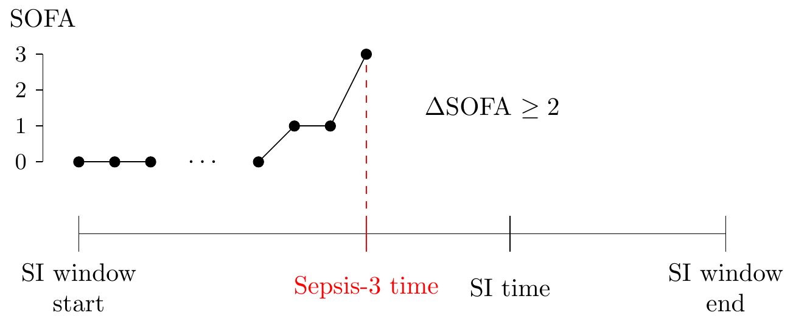

label_sep3.RdThe sepsis 3 label consists of a suspected infection combined with an acute increase in SOFA score.
Data objects
Switch that can be used to filter SI windows
Function used to determine the SOFA increase during an SI window
Required SOFA increase to trigger Sepsis 3
Lower/upper extent of SI windows
Logical flag indicating whether to return the individual components alongside the aggregated score
Time series interval (only used for checking consistency of input data)
Vector of SOFA scores
Vector of time shifts (multiples of the current interval) over
which base::pmin() is evaluated
The Sepsis-3 Consensus (Singer et. al.) defines sepsis as an acute
increase in the SOFA score (see sofa_score()) of 2 points or more within
the suspected infection (SI) window (see susp_inf()):

A patient can potentially have multiple SI windows. The argument
si_window is used to control which SI window we focus on (options are
"first", "last", "any").
Further, although a 2 or more point increase in the SOFA score is defined,
it is not perfectly clear to which value the increase refers. For this the
delta_fun argument is used. If the increase is required to happen with
respect to the minimal SOFA value (within the SI window) up to the current
time, the delta_cummin function should be used. If, however, we are
looking for an increase with respect to the start of the SI window, then
the delta_start function should be used. Lastly, the increase might be
defined with respect to values of the previous 24 hours, in which case the
delta_min function is used.
Singer M, Deutschman CS, Seymour CW, et al. The Third International Consensus Definitions for Sepsis and Septic Shock (Sepsis-3). JAMA. 2016;315(8):801–810. doi:10.1001/jama.2016.0287